Yakage, Okayama: things to do, food and stays
Yakage · Okayama
Yakage
Highlighted on the Okayama map.

Stay
宿場町にある心の湯宿 やかげ一譚
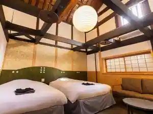
Shukuba Machi Niaru Kokoro No Yuyado Yakage Ichi Tan
蔵 イン
Kura Inn
Inn in Yakage with a renovated traditional house.
黒緋
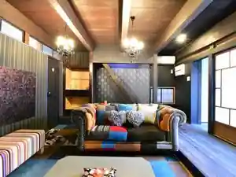
Kuro Hi
Inn in Yakage with one group per day.
Dining
一杯のかけや
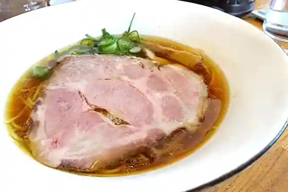
Ippai Nokakeya
宿場町矢掛の侍イタリアン
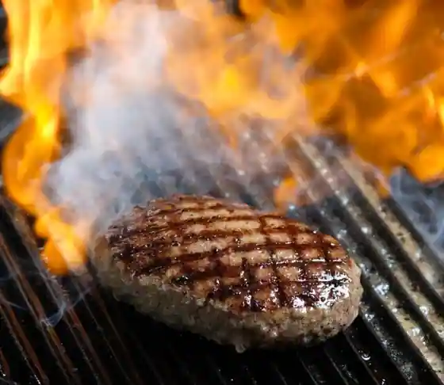
Shukuba Machi Yakage No Samurai Itarian
ティーツーラボ
Teitsurabo
カフェ フルーツトピア
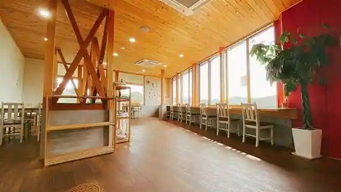
Cafe Furutsutopia
石挽カカオissai
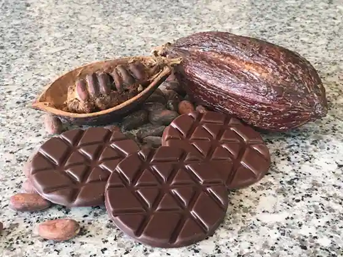
Ishi Ban Kakao issai
侍が恋するパン屋
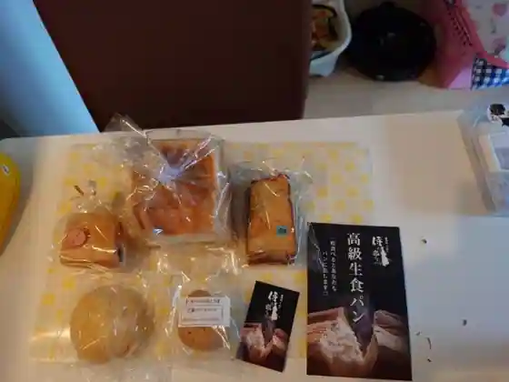
Samurai Ga Koisuru Bakery Ya
館址亭
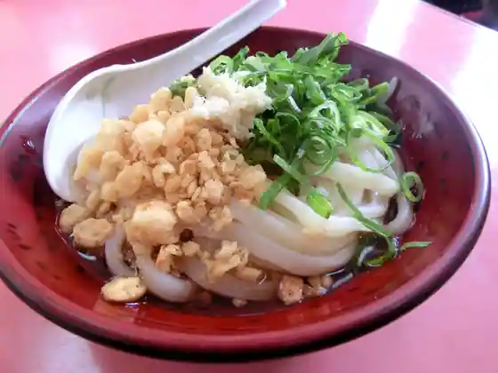
Kan Shi Tei
ESPIëGLE
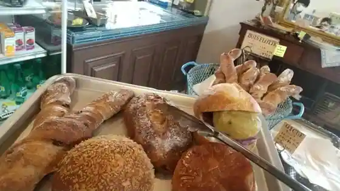
ESPI E GLE
つお
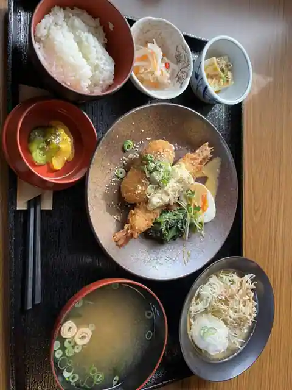
Tsuo
シーズ藤原家
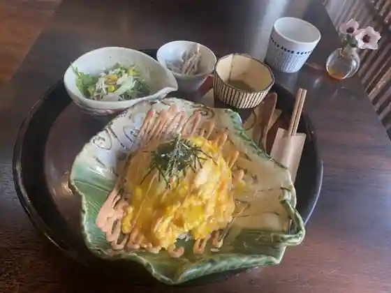
Shizu Fujiwara Ie
うどん よし野
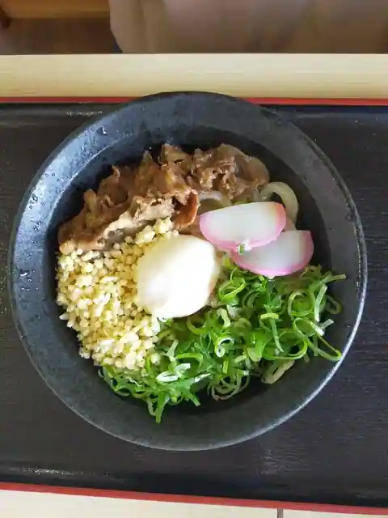
Udon Yoshi No
テンペ料理 発酵亭
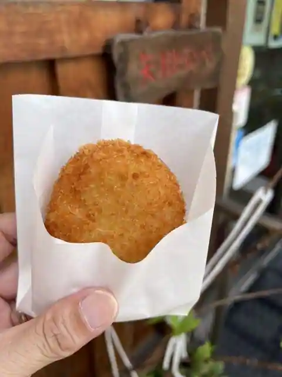
Tenpe Ryori Hakko Tei
備中屋長衛門・お食事処ゆらり
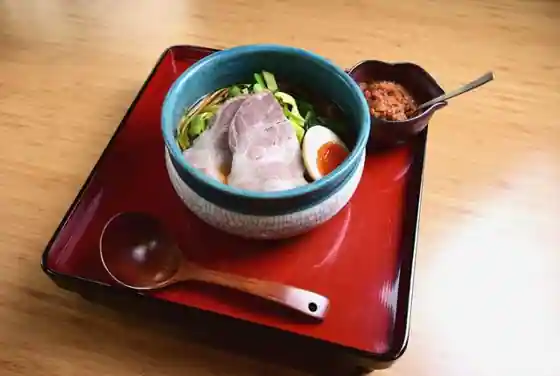
Bitchu Ya Choei Mon O Shokuji Tokoro Yurari
BEAR'S OVEN
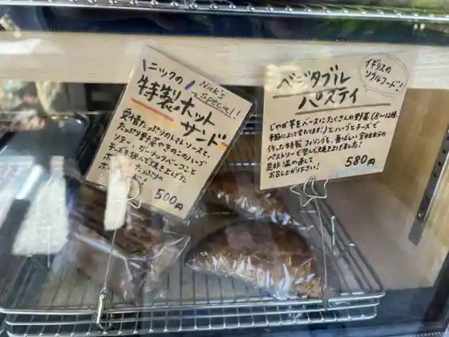
BEAR'S OVEN
満天茶屋
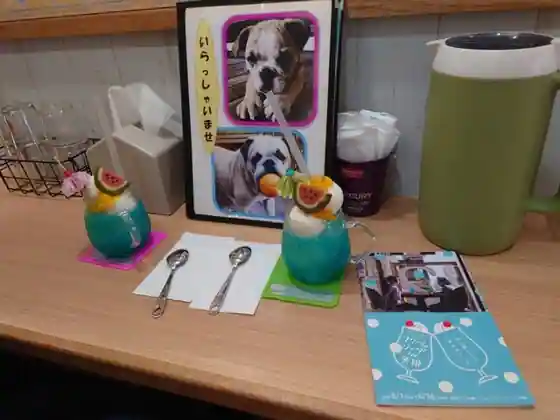
Manten Chaya
佐藤玉雲堂
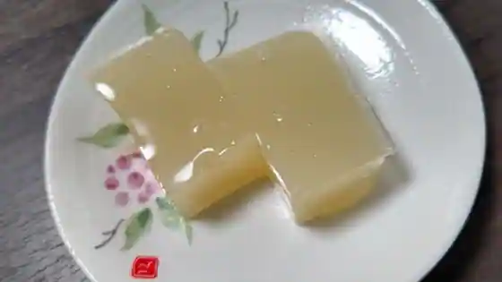
Sato Tama Kumo Do
御菓子処 清邦庵
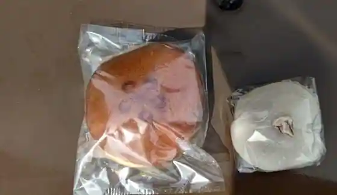
O Kashi Tokoro Kiyoshi Kuni Iori
おこのみやき 大国屋
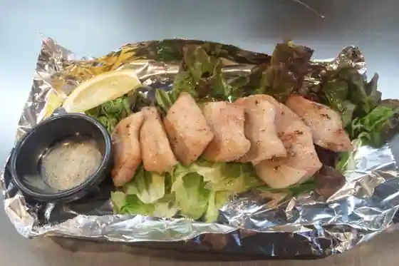
Okonomiyaki Taikoku Ya
きらり
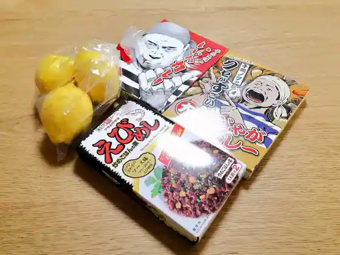
Kirari
宝来寿司
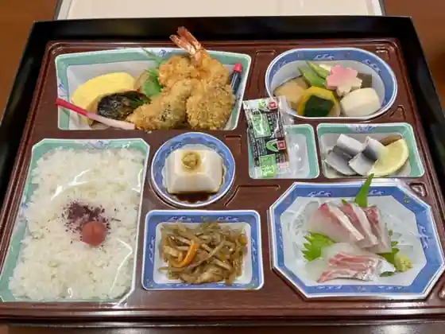
Horai Sushi
うどんどう
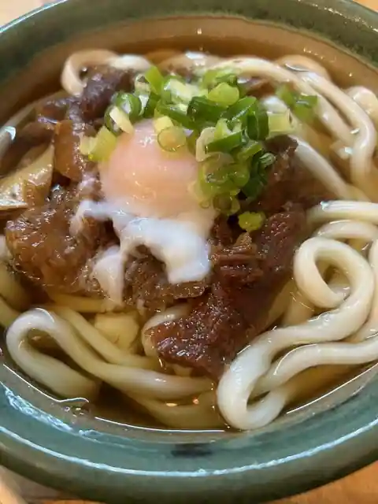
Udondo
尾道ラーメン まるじょう
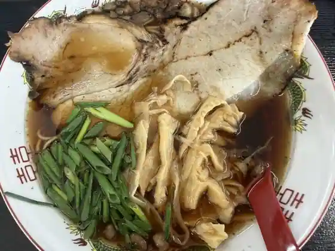
Onomichi Ramen Marujo
松月
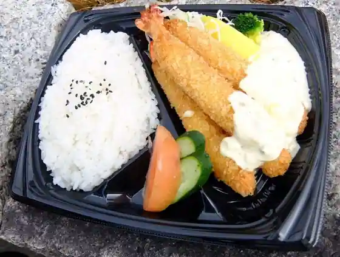
Matsuzuki
カフェ デル オルト
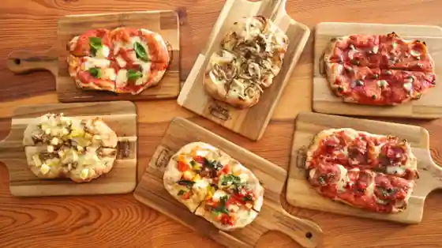
Cafe Deru Oruto